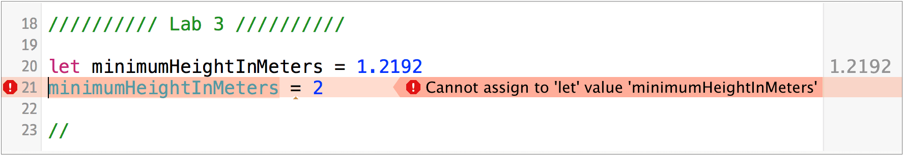

When you try to set the constant you should see a compiler error like this. If you don't then you need to close the playground and open it again. This is a new technology and they're still working out the bugs.

The answer is everything! This is something where Swift is a little than most languages. In Swift we want to favor using constants as much as possible. If the compiler knows that a value can't change it can do some fast optimizations that it can't on a variable. This gives us our first guideline for coding in Swift.
Create constants instead of variables unless you are sure the value will change over time.